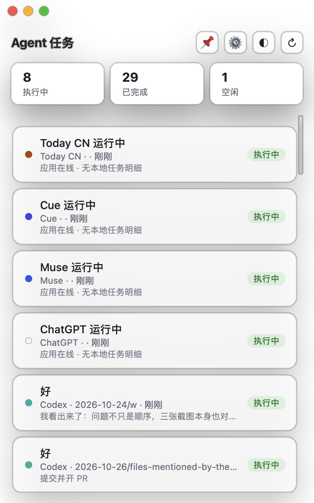
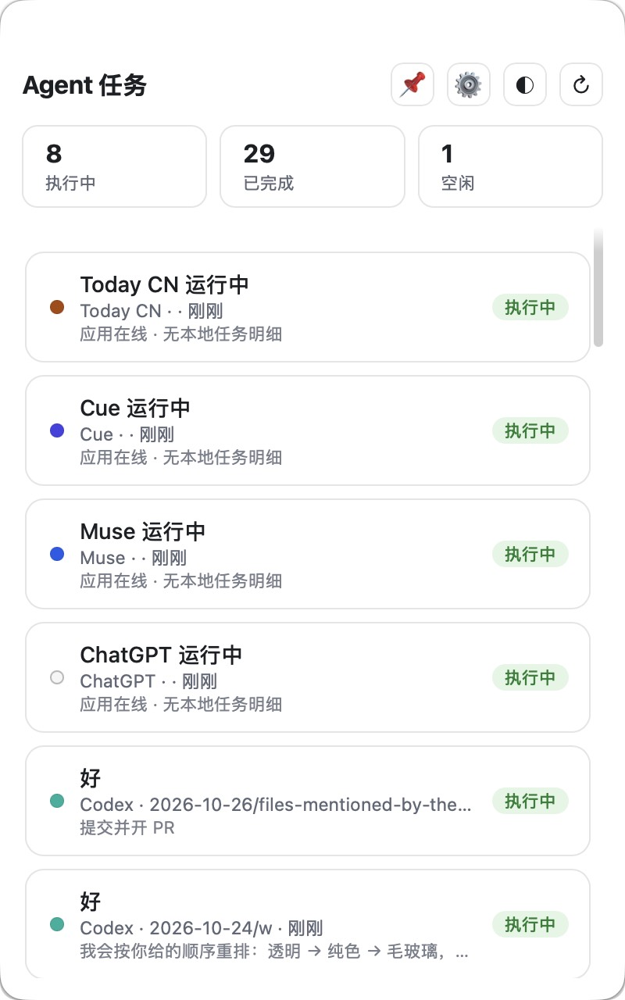

按回合边界判状态
读每个 Agent 自己的 task_complete、stop_reason、turn/end，不靠「120 秒没写文件」硬猜。
一个悬浮小面板，把 Codex、Claude Code、DeepSeek、Cue、Grok、Today 的会话状态收在一起。 任务结束就提醒，点一下卡片跳回对应的 Agent。

会话里有「回合开始、还没结束」的信号，正在干活。
助手已经回复完，回合正常结束。
在等你输入，或者进程已经退出。
只做一件事：让你随时知道现在有几个任务在跑
读每个 Agent 自己的 task_complete、stop_reason、turn/end，不靠「120 秒没写文件」硬猜。
服务端对比状态变化，面板关着也不漏发；每条只提醒一次。
卡片带 URL scheme，点开直接落到对应的 Agent 会话。
📌 之后浮在所有窗口之上，包括全屏 Space。
全透明、纯色、毛玻璃。透明模式下滑过自动让路，不挡你操作别的应用。
🤖 图标直接显示执行中数量，⌥⌘A 随时唤出面板。
透明看底色，纯色求稳定，毛玻璃适合日常

能读到本地会话的，就有真实任务明细
| Agent | 状态 | 任务明细 | 数据来源 |
|---|---|---|---|
| Codex | 完整 | 标题 · 最近进展 · 回合状态 | ~/.codex/sessions/**/*.jsonl |
| Claude Code | 完整 | 标题 · 最近回复 · stop_reason | ~/.claude/projects/**/*.jsonl |
| DeepSeek Harness | 完整 | 标题 · 首条提问 · turn 边界 | ~/.dsh/sessions/**/session.v4.jsonl.zstd |
| Cue | 完整 | 实时工作文本 · agentStatus | ~/Library/Application Support/Cue/SessionStore/sessions.sqlite |
| Grok Bot | 完整 | 会话名 · 最近消息 | ~/Library/Application Support/Grok Bot/sand-client-persistence/*.blob |
| Today / Today CN | 完整 | 会话标题 · 最近活动 | ~/Library/Application Support/ai.today.macos.app/chat_*.sqlite |
| Muse / ChatGPT | 仅在线 | 任务在服务端执行，本地只能确认进程在 | 进程检测 |
不需要开发者账号，ad-hoc 签名即可运行
AgentTaskPanel-v0.3.3.dmg升级时直接拖新的进「应用程序」，系统提示就选「替换」。
不会。面板只读本机的会话文件，服务跑在 127.0.0.1:8765，没有外发请求。
Muse、ChatGPT 的任务在厂商服务端执行，本地没有可读的会话文件，只能确认进程在线。
用系统自带的 /usr/bin/python3。如果提示需要安装命令行工具，执行 xcode-select --install。
目前只有 macOS 版本。UI 外壳是原生 Swift，跨平台需要重写窗口层，暂不在计划内。